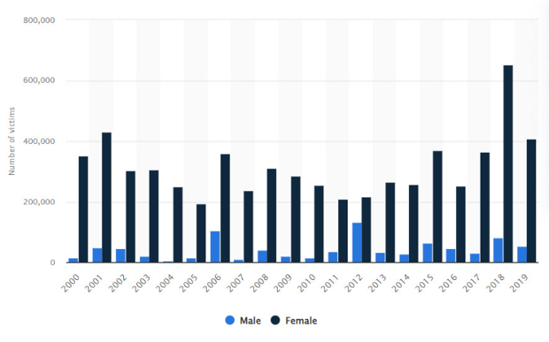

Myths and Facts about Sexual Violation
Contents
Myths and Facts about Sexual Violation#
Although definitions about sexual assaults are provided, certain (mis)assumptions about sexual assault can easily be made. These assumptions are widely common, which can be referred to as myths. This section provides a closer lens to myths and facts about sexual violation for the purpose of helping readers to identify and be aware of their own assumptions by giving actual facts, statistics, and research on this matter. We aim that after reading, readers can self-reflect on their (mis)assumptions about sexual assault as well as develop a more thorough understanding to identify and act upon when witnessing or experiencing real-life situations.
Contents
Q: Who can be the victim of sexual assault?#
Are only young, pretty women the victim of sexual assault?#
A: NO, everyone can be victim of sexual assault. Offenders do not choose people that belong to a particular gender or age. Offenders often choose people whom they perceive as vulnerable or over whom they believe can assert power, regardless of size, strength, sexual orientation, or appearance. Victims can range from young children to elderly adults.

Are only gay men victims of sexual assault?#
A: No, heterosexual, bisexual, and gay men are equally likely to be sexually assaulted. Being sexually assaulted has nothing to do with your current or future sexual orientation.
About one in four male victims of completed or attempted rape first experienced it between the ages of 11 and 17.
Are only those who dress provocatively the victim of sexual assault?#
A: No, neither provocative dress nor promiscuous behavior are invitations for unwanted sexual activity. In fact, many cases of sexual assault happen when the victim dress in layers, long pants and sleeves, and high necklines. Sometimes, the rapists could not even remember what the victims were wearing. Forcing someone to engage in non-consensual sexual activity is sexual assault, regardless of the way that person dresses or acts.
Q: Who can be the sexual offender?#
Stranger?#
A: Most sexual assaults and rapes are committed by someone the victim knows.
In Vietnam, 8442 sexual assault cases with children as victims had been reported from 1/1/2015 to 30/6/2019. 90% of the assaulters are someone the victims know.
Half of female victims (51.5%) of rape reported being raped by an intimate partner and 40.8% by an acquaintance. Over half (52.4%) of male victims report being raped by an acquaintance and 15.2% by a stranger.
Only gay men sexually assault other men?#
A: When male rape other male, that’s not a sign of homosexuality. Most men who sexually assault other men identify themselves as heterosexual. Sexual assault is about violence, anger, and control over another person, not lust or sexual attraction.
Q: Where can sexual assault occur?#
It only happens in dark alleys or other “dangerous” and isolated places where strangers might be lurking or hiding?#
A: Sexual assault can happen anywhere and anytime. It can be in the public space, at home, etc.
Q: When can sexual assault occur?#
Is it not sexual assault if it happens after drinking or taking drugs?#
A: Many sexual assaults happen when some use alcohol as a weapon to render someone vulnerable. In other cases, it happens when someone takes advantage of a person in an incapacitated state. Being under the influence of alcohol or drugs is not an invitation for non-consensual sexual activity.
Is there 0% chance of sexual assault if someone consent to engage in some sexual activity?#
A: No, even if a person consented to engage in some sexual activity, it does not serve as a blanket consent for all sexual activity.
It is not sexual assault if…#
The victim does not put up a fight and resists?#
A: There are many reasons why a victim of sexual assault would not fight and resist. Reasons include fear of repercussions, fear of not being believed, lack of empathy and knowledge among the authorities and the public, and distrust in institutional processes.
There was no penetration by a penis#
A: According to Vietnam Criminal Code 2015, rape not only include the penetration by a penis, but also other sexual insertion of other body parts, such as fingers, toes, tongue, or sex toys into others’ mouth, vagina, anus to take advantage of a person in an incapacitated state. Refer to examples above for elaborations on different forms of sexual violations.
Victim had erection or ejaculation during a sexual assault because it means that the victim “really wanted it” or consented to it.#
A: Erection and ejaculation are common physiological responses that may result from mere physical contact or even extreme stress. These responses do not imply that you wanted or enjoyed the assault.
All sexual assault victims will report the crime immediately to the police?#
A: Many victims of sexual assaults choose to stay silenced, rather than report the assault to the police. In fact, reporting a sexual assault incident to the police is the exception, not the norm.
Most people dramatize their situations or lie about being sexually assaulted. It’s not really a big problem?#
A: A number of unreported cases is undefined, estimating many more sexual assault cases remain unknown.
The prevalence of false reporting for sexual assault crimes is low - between 2% and 10%.
A rape survivor will be battered, bruised, and hysterical?#
A: Many rape survivors are not visibly injured. People react to crises in a spectrum of responses, which can include calm, hysteria, withdrawal, anger, apathy, denial, and shock.